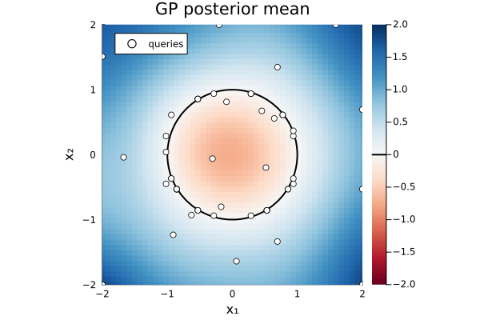
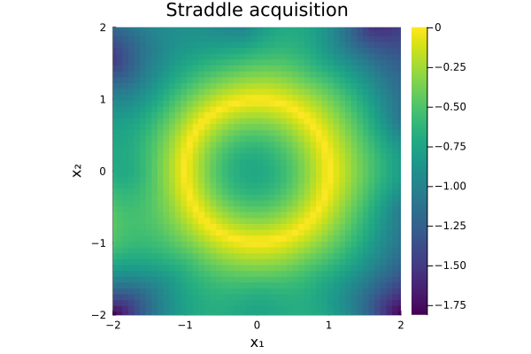

Level-set recovery with Straddle
This vignette walks through a complete active-learning experiment: recovering the unit-circle level set f(x) = ‖x‖ − 1 = 0 in two dimensions using the Straddle acquisition function.
Setup
ENV["GKSwstype"] = "100" ## GR headless rendering (no display required)
using Magpie, KernelFunctions, LinearAlgebra, Random
using Plots; gr()Plots.GRBackend()What is level-set estimation?
Many scientific tasks ask not where is the minimum of f? but where does f change sign? — the boundary of a feasible region, a decision surface, or a phase boundary. For minimum-finding, mature packages like Surrogates.jl and BayesianOptimization.jl work well. Magpie's Straddle acquisition targets a contour instead — a different question, and a different tool.
The Straddle criterion (Bryan et al. 2005) is:
a(x) = β σ(x) − |μ(x) − h|where h is the target level, μ(x) and σ(x) are the GP posterior mean and standard deviation, and β is a balancing coefficient. High σ pulls the query toward unexplored space; the penalty |μ − h| pulls it toward the boundary. Together they concentrate observations exactly where the classification decision is most uncertain — near the level set, not at any extremum.
The function and GP model
We use the unit-circle signed-distance function as a clean, visual test case.
Random.seed!(42)
f(x) = norm(x) - 1.0 ## signed distance to the unit circlef (generic function with 1 method)Build an ActiveLearner with an ExactGP (squared-exponential kernel, lengthscale 0.5, small observation noise) and the Straddle acquisition targeting h = 0.
al = ActiveLearner(
ExactGP(with_lengthscale(SqExponentialKernel(), 0.5); noise=1e-4),
Straddle(h=0.0),
)ActiveLearner{Straddle{Float64}}(ExactGP{AbstractGPs.GP{AbstractGPs.ZeroMean{Float64}, KernelFunctions.TransformedKernel{KernelFunctions.SqExponentialKernel{Distances.Euclidean}, KernelFunctions.ScaleTransform{Float64}}}, Vector{Any}, Vector{Float64}, Nothing, Vector{Float64}}(AbstractGPs.GP{AbstractGPs.ZeroMean{Float64}, KernelFunctions.TransformedKernel{KernelFunctions.SqExponentialKernel{Distances.Euclidean}, KernelFunctions.ScaleTransform{Float64}}}(AbstractGPs.ZeroMean{Float64}(), Squared Exponential Kernel (metric = Distances.Euclidean(0.0))
- Scale Transform (s = 2.0)), Any[], Float64[], nothing, Float64[], 0.0001), Straddle{Float64}(0.0, 1.96), Any[], Any[], Float64[])Cold start
Seed the GP with 10 random observations spread over the full domain [−2, 2]² so the model has a rough global picture before the acquisition-guided phase begins.
box = Box([-2.0, -2.0], [2.0, 2.0])
for x in [4 .* rand(2) .- 2 for _ in 1:10]
observe!(al, x, f(x))
endActive-learning run
run! selects 40 further queries, refitting the GP hyperparameters every 10 steps. The first call to fit! after the cold start sets the kernel parameters; subsequent refits keep them current as new data arrive.
run!(al, f; budget=40, over=box, refit_every=10)ActiveLearner{Straddle{Float64}}(ExactGP{AbstractGPs.GP{AbstractGPs.ZeroMean{Float64}, KernelFunctions.TransformedKernel{KernelFunctions.SqExponentialKernel{Distances.Euclidean}, KernelFunctions.ScaleTransform{Float64}}}, Vector{Vector{Float64}}, Vector{Float64}, LinearAlgebra.Cholesky{Float64, Matrix{Float64}}, Vector{Float64}}(AbstractGPs.GP{AbstractGPs.ZeroMean{Float64}, KernelFunctions.TransformedKernel{KernelFunctions.SqExponentialKernel{Distances.Euclidean}, KernelFunctions.ScaleTransform{Float64}}}(AbstractGPs.ZeroMean{Float64}(), Squared Exponential Kernel (metric = Distances.Euclidean(0.0))
- Scale Transform (s = 0.8193214109418037)), [[0.5173804925704357, -0.19864423761522554], [-0.09037142626872896, 0.8125193960128057], [0.693384582557985, -1.3364222608274638], [0.4539129000033766, 0.6733613118309112], [-0.17187563679318352, -0.8025388184249556], [0.644573490477482, 0.5577254481693972], [-0.6294083083946083, -0.9285182464043196], [0.06348563339800783, -1.6399079358264124], [-0.9093702168228246, -1.233751189612248], [-0.3056349741096045, -0.061190530427193135] … [0.9387755102040817, -0.3673469387755102], [0.5306122448979592, -0.8571428571428571], [-0.8571428571428571, -0.5306122448979592], [-0.5306122448979592, 0.8571428571428571], [0.7755102040816326, 0.6122448979591837], [0.9387755102040817, 0.3673469387755102], [0.2857142857142857, 0.9387755102040817], [-0.8571428571428571, -0.5306122448979592], [0.8571428571428571, -0.5306122448979592], [0.5306122448979592, -0.8571428571428571]], [-0.4457959696734777, -0.18247032862234358, 0.5055917901490765, -0.18793326809915367, -0.17926265492425275, -0.1476311478226815, 0.12174014485615814, 0.6411363330431725, 0.5326761527191672, -0.688299794012035 … 0.008088900834977153, 0.008088900834976931, 0.008088900834976931, 0.008088900834976931, -0.011941352088962964, 0.008088900834977153, -0.01870895672070949, 0.008088900834976931, 0.008088900834976931, 0.008088900834976931], LinearAlgebra.Cholesky{Float64, Matrix{Float64}}([1.0000499987500624 0.6267523349264851 … 0.927015426828732 0.8644595493545755; 1.0e-323 0.779282689827125 … -0.22740133705979385 -0.25294909058819487; … ; 2.0e-322 6.9052441715104e-310 … 0.011603791555390318 0.0010606620531099762; 2.0e-322 6.905244171512e-310 … 0.0 0.011481821342197891], 'U', 0), [5.913623741666492, 142.8256116485786, -13.718759568882383, 58.88286964848191, 108.42784989048822, 41.63675198627664, -76.94258244858788, 13.144741103797012, -0.10074860020773398, -131.63378772838738 … 2.2738960948158944, 8.406779919323395, 40.4356728408918, 15.781071252635192, -16.89183827346289, -17.910058793591467, -56.72563847348372, 40.43567284089179, 11.20450659059488, 8.406779919323393], 0.0001), Straddle{Float64}(0.0, 1.96), Any[[0.5173804925704357, -0.19864423761522554], [-0.09037142626872896, 0.8125193960128057], [0.693384582557985, -1.3364222608274638], [0.4539129000033766, 0.6733613118309112], [-0.17187563679318352, -0.8025388184249556], [0.644573490477482, 0.5577254481693972], [-0.6294083083946083, -0.9285182464043196], [0.06348563339800783, -1.6399079358264124], [-0.9093702168228246, -1.233751189612248], [-0.3056349741096045, -0.061190530427193135] … [0.9387755102040817, -0.3673469387755102], [0.5306122448979592, -0.8571428571428571], [-0.8571428571428571, -0.5306122448979592], [-0.5306122448979592, 0.8571428571428571], [0.7755102040816326, 0.6122448979591837], [0.9387755102040817, 0.3673469387755102], [0.2857142857142857, 0.9387755102040817], [-0.8571428571428571, -0.5306122448979592], [0.8571428571428571, -0.5306122448979592], [0.5306122448979592, -0.8571428571428571]], Any[-0.4457959696734777, -0.18247032862234358, 0.5055917901490765, -0.18793326809915367, -0.17926265492425275, -0.1476311478226815, 0.12174014485615814, 0.6411363330431725, 0.5326761527191672, -0.688299794012035 … 0.008088900834977153, 0.008088900834976931, 0.008088900834976931, 0.008088900834976931, -0.011941352088962964, 0.008088900834977153, -0.01870895672070949, 0.008088900834976931, 0.008088900834976931, 0.008088900834976931], [1.9599997921935461, 1.9599711661763248, 1.9594212126062864, 1.9564547145515485, 1.9524726338954654, 1.940477028281884, 1.9369237819462122, 1.8629469998196206, 1.826161304820054, 1.597469898931193 … 0.007765213546797083, 0.00767239164225564, 0.00692732153901158, 0.006371443479848601, 0.005922408971223085, 0.005312507303867002, 0.005375881893847264, 0.005097197402479107, 0.005062886434235242, 0.004069639360660807])Results
g = posterior_gp(al)ExactGP{AbstractGPs.GP{AbstractGPs.ZeroMean{Float64}, KernelFunctions.TransformedKernel{KernelFunctions.SqExponentialKernel{Distances.Euclidean}, KernelFunctions.ScaleTransform{Float64}}}, Vector{Vector{Float64}}, Vector{Float64}, LinearAlgebra.Cholesky{Float64, Matrix{Float64}}, Vector{Float64}}(AbstractGPs.GP{AbstractGPs.ZeroMean{Float64}, KernelFunctions.TransformedKernel{KernelFunctions.SqExponentialKernel{Distances.Euclidean}, KernelFunctions.ScaleTransform{Float64}}}(AbstractGPs.ZeroMean{Float64}(), Squared Exponential Kernel (metric = Distances.Euclidean(0.0))
- Scale Transform (s = 0.8193214109418037)), [[0.5173804925704357, -0.19864423761522554], [-0.09037142626872896, 0.8125193960128057], [0.693384582557985, -1.3364222608274638], [0.4539129000033766, 0.6733613118309112], [-0.17187563679318352, -0.8025388184249556], [0.644573490477482, 0.5577254481693972], [-0.6294083083946083, -0.9285182464043196], [0.06348563339800783, -1.6399079358264124], [-0.9093702168228246, -1.233751189612248], [-0.3056349741096045, -0.061190530427193135] … [0.9387755102040817, -0.3673469387755102], [0.5306122448979592, -0.8571428571428571], [-0.8571428571428571, -0.5306122448979592], [-0.5306122448979592, 0.8571428571428571], [0.7755102040816326, 0.6122448979591837], [0.9387755102040817, 0.3673469387755102], [0.2857142857142857, 0.9387755102040817], [-0.8571428571428571, -0.5306122448979592], [0.8571428571428571, -0.5306122448979592], [0.5306122448979592, -0.8571428571428571]], [-0.4457959696734777, -0.18247032862234358, 0.5055917901490765, -0.18793326809915367, -0.17926265492425275, -0.1476311478226815, 0.12174014485615814, 0.6411363330431725, 0.5326761527191672, -0.688299794012035 … 0.008088900834977153, 0.008088900834976931, 0.008088900834976931, 0.008088900834976931, -0.011941352088962964, 0.008088900834977153, -0.01870895672070949, 0.008088900834976931, 0.008088900834976931, 0.008088900834976931], LinearAlgebra.Cholesky{Float64, Matrix{Float64}}([1.0000499987500624 0.6267523349264851 … 0.927015426828732 0.8644595493545755; 1.0e-323 0.779282689827125 … -0.22740133705979385 -0.25294909058819487; … ; 2.0e-322 6.9052441715104e-310 … 0.011603791555390318 0.0010606620531099762; 2.0e-322 6.905244171512e-310 … 0.0 0.011481821342197891], 'U', 0), [5.913623741666492, 142.8256116485786, -13.718759568882383, 58.88286964848191, 108.42784989048822, 41.63675198627664, -76.94258244858788, 13.144741103797012, -0.10074860020773398, -131.63378772838738 … 2.2738960948158944, 8.406779919323395, 40.4356728408918, 15.781071252635192, -16.89183827346289, -17.910058793591467, -56.72563847348372, 40.43567284089179, 11.20450659059488, 8.406779919323393], 0.0001)Figure 1 — posterior mean with true contour and queries
Build a 50×50 evaluation grid and compute the GP posterior mean at each point. Overlay the true level set (contour! at levels=[0.0]) and mark every point the active learner queried.
xs = range(-2, 2; length=50)
ys = range(-2, 2; length=50)
Z_mean = [predmean(g, [xi, yj]) for yj in ys, xi in xs]
Z_true = [f([xi, yj]) for yj in ys, xi in xs] ## the true signed-distance field
pts = queried_points(al)
px = [p[1] for p in pts]
py = [p[2] for p in pts]
plt1 = heatmap(xs, ys, Z_mean;
title = "GP posterior mean",
xlabel = "x₁", ylabel = "x₂",
c = :RdBu, clim = (-2, 2),
aspect_ratio = :equal, xlims = (-2, 2), ylims = (-2, 2),
)
# overlay the TRUE level set (zero contour of f), not the posterior's own contour
contour!(plt1, xs, ys, Z_true; levels=[0.0], lw=2, lc=:black, label="true level set (h = 0)")
scatter!(plt1, px, py;
ms = 4,
mc = :white,
msw = 1,
label = "queries",
)
Figure 2 — Straddle acquisition surface
The acquisition a(g, p) reveals which regions the learner found most informative. High values (warm colours) lie near the level set where the GP is still uncertain.
a = al.acq ## the Straddle functor, already holds h=0.0
Z_acq = [a(g, [xi, yj]) for yj in ys, xi in xs]
plt2 = heatmap(xs, ys, Z_acq;
title = "Straddle acquisition",
xlabel = "x₁", ylabel = "x₂",
c = :viridis,
aspect_ratio = :equal, xlims = (-2, 2), ylims = (-2, 2),
)
The example's correctness checks run when this file is executed directly (e.g. in CI); they are stripped from this rendered page.
This page was generated using Literate.jl.